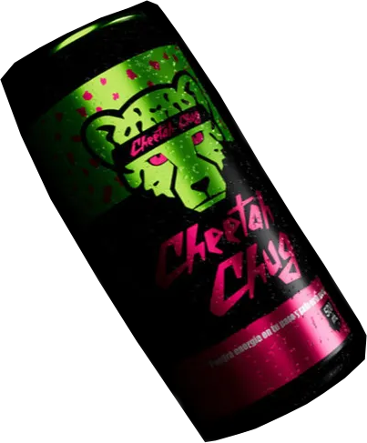

Taurina extrema
9000 mgSuficiente para que tu pulso tenga pulso propio.
LA BEBIDA ENERGÉTICA EXTREMA

Todo comenzó con una pregunta que probablemente nunca debió hacerse: ¿Qué pasaría si extrajéramos los fluidos de un guepardo y los utilizáramos como bebida energizante? La respuesta superó todas nuestras expectativas. Tras años de investigaciones altamente cuestionables, múltiples explosiones inexplicables y la desaparición de varios científicos durante las pruebas, nació Guepardex. Los primeros resultados fueron sorprendentes. La bebida demostró ser capaz de proporcionar suficiente energía para alimentar desde un Concorde hasta un montacargas industrial, pasando por una impresionante variedad de vehículos de fabricación rusa. Pero eso era apenas el comienzo. Durante las pruebas iniciales se descubrió un efecto completamente inesperado: individuos que habían permanecido clínicamente muertos durante hasta 6 horas presentaron signos de actividad después de consumir Guepardex. Los científicos, en lugar de detener el experimento, decidieron continuar. Los consumidores comenzaron a desarrollar un instinto animal extremadamente avanzado, reflejos fuera de lo normal y capacidades físicas que los investigadores clasificaron oficialmente como: “Definitivamente no humanas.” También se registraron casos de individuos capaces de correr a velocidades absurdas, reaccionar antes de que ocurrieran los acontecimientos y tomar decisiones completamente cuestionables a velocidades impresionantes. Ante estos resultados, el proyecto fue clasificado como Emergencia Extrema. Y así nació Guepardex.
🏆 Respaldado por profesionalesGuepardex cuenta con la aprobación de numerosos profesionales de dudosa reputación, entre ellos Chuck Norris, John Wick, Rock Callahan, Billy Stumps, El Muerto Dave, Kick Buttowski, Gunther Magnuson, Brad Buttowski y otros expertos altamente capacitados.
Si ellos lo aprueban, ¿qué podría salir mal?Suficiente para que tu pulso tenga pulso propio.
Del valor diario recomendado para una persona normal.
Ningún guepardo participó. Ninguno nos alcanzó.
Medido con un reloj que dejó de funcionar a mitad de prueba.
Esta página es un homenaje en forma de parodia al espíritu de Kick Buttowski: un niño con casco, cero miedo y una lista infinita de acrobacias que nadie le pidió.
Cheetah Chug es lo que pasaría si esa energía se pudiera comprar en lata. Spoiler: no se puede, y mejor así.
Esto es una parodia: no hay tienda ni pedidos. Pero si llegaste hasta aquí, ya mereces una lata imaginaria.
VOLVER A LA LATA CONOCE A QUIEN LO HIZO